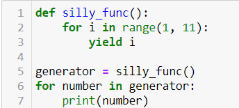
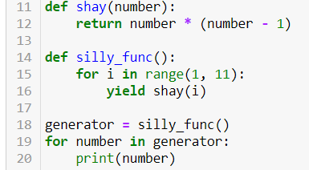

אני עונה על תרגילים - למשל פיצוץ אוכלוסין ומנה מושלמת לחלוקה (סושי) ולא סגור אם יש דרך נכונה וקצרה יותר ואני סתם מפספס ומוסיף “פונקציה טיפשה”.
תחילה כתבתי פונקציה שעונה לי על הדרישה. מוסיף פרינטים לבדיקה משלי ללא לולאה / לולאה קצרה מאוד.
לאחר מכן מגיעה השאלה שלי. אני רוצה להוסיף generator. האם אני חייב ליצור פונקציה כמו silly_generator() שתשלח לפונקציה שכתבתי קודם . ואז for שקורא לsilly_generator (זה מה שאני עושה) או שיש דרך ישירות מתוך for לקרוא לפונקציה שכתבתי תחילה, מבלי להשתמש ב"פונקציה טיפשה" ועדיין בצורה נכונה עם גנרטור.
Yam
קצת קשה להבין מהתיאור.
בוא נעשה תרגיל – כתוב לי generator שמחזיר לי את המספרים מ־1 עד 10.
לייק 1
hushay12
def silly_func():
for i in range(1, 11):
yield i
generator = silly_func()
for number in generator:
print(number)

hushay12
כתבתי את הפונקציה. אבל אני אחדד את השאלה שלי - אני אוסיף פונקציה אחרת שמכפילה את הספרה בספרה הקודמת לה עד המספר 10 כולל. נעזר בsiily_func() כדי לקבל תשובה. האם יש דרך נכונה יותר מבלי הsilly func().
הפונקציה תענה על:
10
21
32
…
109
hushay12
הכוונה שלי
def shay(number):
return number * (number - 1)
def silly_func():
for i in range(1, 11):
yield shay(i)
generator = silly_func()
for number in generator:
print(number)

Yam
זה סבבה, זה אחלה פתרון.
למה זה לא מקליק לך?
hushay12
מה הכוונה מקליק? זה עובד פשוט נראה לי שאני מעריך את הדרך שאני משתמש בנוסף בפונקציה הטיפשית. אבל תודה הבנתי . העיקר עובד